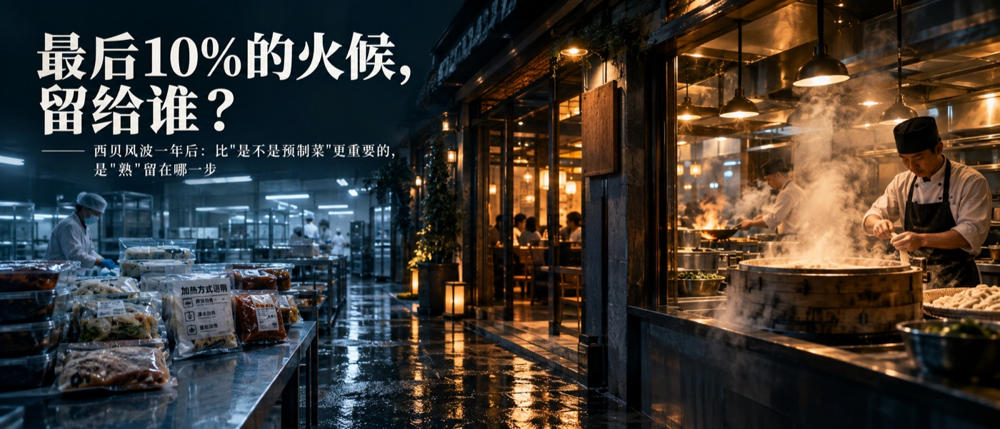
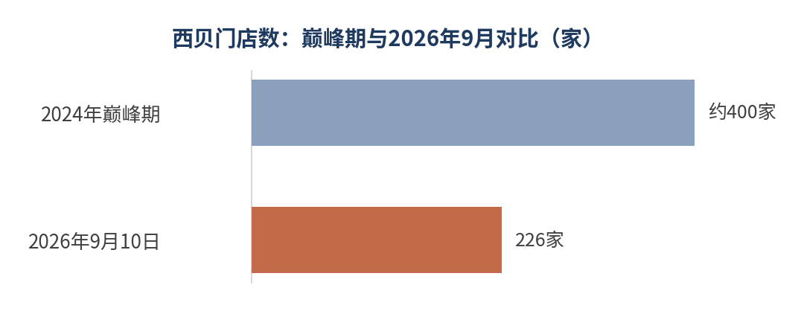

FoodIntelAI
食品决策系统

西贝一年关掉174家店：问题不是预制菜，是"熟"做错了地方
西贝关店与预制菜争议 · 公开数据标来源与年份 · 判断落在工艺终点设计
2025年9月10日，罗永浩发了一条微博，说西贝"几乎全都是预制菜"。西贝创始人贾国龙当天飞回北京，强硬回应"没有一道是预制菜"，扬言起诉，还开放全国370家门店的后厨给公众参观[1]。事件过去一年，这场争议对西贝的经营产生了长期影响，但两类数据的来源等级不同，需要分开看：门店数来自窄门餐眼（第三方监测，转引自媒体）；营收与亏损只见于媒体报道，西贝未公开披露其口径，本文不展开。到2026年9月10日，窄门餐眼数据显示西贝全国在营门店226家，比巅峰期近400家减少约174家，降幅超四成[10][12]。另据媒体报道，西贝自2025年11月起营收明显下滑，2026年一季度一次性关闭102家门店[10]。贾国龙本人在春节前卸任了西贝主品牌CEO[11]。

来源：窄门餐眼数据，转引自[10][12]；"彻底倒闭"等传闻未经证实，西贝官方回应称门店正常运营，本文仅采用多方媒体交叉确认的经营数据。
这场风波最后没有停在"是不是预制菜"这个问题上——西贝始终坚持自己符合国家定义、不是预制菜，而从现行监管定义看，中央厨房制作的菜肴确实不纳入预制菜范围[7]。这场争议真正暴露出来的问题，也可以从西贝2025年9月15日的致歉信中找到一个重要线索：它自己承认"生产工艺与顾客的期望有较大差异"[2]。这句话背后，其实是一个具体的工程问题：中央厨房把菜做到了多熟，门店还剩多少工序，消费者吃到嘴里时，感受到的是哪一段的味道。
一、问题不是有没有预制，是"熟"留在了哪一步
西贝的整改方案说得很直接：把中央厨房前置加工工艺调整到门店现场加工，多数被指"预制"的菜品将在门店现场制作[3]。一位西贝厨师在媒体探访时的解释也印证了这一点："预制菜是工厂做出成品送到门店加热即食，我们所有肉类都是现炖，莜面现场制作，中央厨房提供的只是预处理原料和酱料。"[2]换句话说，西贝自己承认的问题并不是"冷冻原料不安全"——符合食品安全要求、并在规定条件下储运的冷冻原料，本身并不等于不安全[1]。真正值得讨论的是：这些原料经过什么加工、在什么时间点完成熟制，以及最终消费者拿到的产品还剩多少关键工序。至于"熟"留在了哪一步、是否直接造成消费者体感的落差，现有公开材料还不足以证明西贝整体如此：如果某些菜品在中央厨房已经完成了较大比例的熟制，门店只剩最后加热，最终入口状态与现制之间的差距是否会被放大，就成为一个值得验证的工程假设；这需要用复原率实测，而不能仅凭工艺路径下结论。
二、关键工序应该留在哪里
21世纪经济报道采访过一家做笋干老鸭煲的企业，负责人马晓钟的说法很有意思："我们基本上在制作时只做到九成熟，最后差10%的火候留着，这样就能把风味最大限度保留在汤汁和食材里，等最后一步高温加热30分钟左右时，最后10%的工序就完成了，食物最终的风味就全部释放。"他把这套做法归结为一句话：最后一道工序放在消费者的餐桌上。[4]这是受访企业针对自身汤煲类产品提出的工艺理念，不等于全行业通用的正确做法——对另一些产品，最优方案恰恰是工厂完成最终熟制、终端只需复热。真正要回答的问题是：最终消费场景要求产品呈现什么状态，工艺链就应该把关键质量形成点放在哪一段。从西贝后来公布的整改方案看，至少有部分菜品此前的加工环节位于中央厨房，整改方向则是将部分前置加工调整回门店现场。
行业里也确实有人在测这道题的答案。上海市食品安全工作联合会发布的团体标准 T/SFSF 000015—2023《预制菜》提出了"复原率"这一指标：按标签标注的方法熟制或加工后，其口感、质地、味道、色泽等感官特性综合评分，与现制该产品感官特性综合评分的比值百分率[5]。据媒体对这项标准的报道，其感官要求中提出了"复原率超过70%"的推荐要求。需要特别注意：这是一项团体标准中的感官评价指标和推荐要求，并不是目前国家层面的统一强制性指标。广州酒家披露，"传统咕噜肉"居家复热后的复原率约90%（企业口径）；一家宁夏企业称其手抓滩羊肉等产品明火加热15分钟，复原率约98%（企业口径）[6]——这两个数字都是企业自己给出的，不是第三方检测结果，只能作为行业对这件事有多重视的参照，不能当作可比较的精确指标。另一面来自消费者端：中国工程院院士孙宝国援引的一项调查显示，62%的消费者认为预制菜"一般般"，3%认为"不好吃"[8]。这里要说明口径："一般般"不等于不满意，剩下约三成也不能直接算作"满意"——该调查给出的是这两档态度分布，不构成满意度结论。西贝遇到的质疑不是个例，而是行业普遍存在、这次被集中放大的问题。
| 产品 | 企业/来源 | 复原率 | 备注 |
|---|---|---|---|
| 传统咕噜肉 | 广州酒家 | 约90% | 企业自评 |
| 手抓滩羊肉等 | 宁夏某农业科技企业 | 约98% | 企业自评，明火加热15分钟 |
上表只放复原率，且两项均为企业自评、非第三方检测结果，基准状态与评价方法未披露，因此不宜相互比较或与消费者调查混用。消费者端的调查结论（62%认为"一般般"、3%认为"不好吃"）与复原率不是同一类指标：复原率是产品工程与感官评价指标，满意度是消费者评价指标，评价主体、基准状态、评价方法都不同，两者不并入同一张表，也不能换算。
三、技术上，把产品做熟和为终点设计，是两件不同的事
新华网一篇报道拆解过一个具体的技术案例：工业预制西蓝花的加工要经过清洗、切分、烫漂和冷冻四步，其中"液氮速冻"能让西蓝花在10分钟内从4℃降到零下35℃，形成的冰晶直径小于10微米，远小于普通冷冻形成的50到100微米——冰晶越小，对植物组织结构的机械损伤通常越小，解冻后的汁液损失也越少，从而更有利于保持原有的质构[7]。这个案例说明的是：工厂要做的不是简单地"把产品做熟、做好再冻起来"，而是要为产品经过冷冻、运输、复热这一整条链路之后，最终抵达消费者嘴里的那个状态去设计工艺参数。
中央厨房的价值，在于把原料处理、部分加工、标准化生产与门店交付重新拆分。至于最终一道关键工序究竟放在中央厨房、门店还是消费者端，并没有统一答案，取决于产品经过储运和终端处理后，能否达到预期的消费状态。
四、监管开始关注“终端怎么完成”
| 时间 | 文件／事件 |
|---|---|
| 2024年3月 | 市场监管总局等六部门发布《关于加强预制菜食品安全监管 促进产业高质量发展的通知》，首次在国家层面明确预制菜定义，中央厨房制作的菜肴不纳入预制菜监管范围 |
| 2025年9月10日至15日 | 罗永浩质疑西贝使用预制菜，引发舆论危机；西贝9月15日发布致歉信，承诺10月1日前将部分中央厨房前置加工工艺调整到门店现场 |
| 2026年1月 | 国务院食安办等部门宣布就《食品安全国家标准 预制菜》《预制菜术语和分类》草案及餐饮环节加工方式明示公告公开征求意见 |
| 2026年2月6日 | 国家卫健委正式发布《食品安全国家标准 预制菜》征求意见稿：明确预制菜不包括主食类、净菜类、即食食品和中央厨房制作的菜肴；不得添加防腐剂；保质期不超12个月；要求标示加热或熟制方式；提出"三减"（减油、减盐、减糖）要求，反馈截止2026年4月8日 |
来源：[7][9]。
这份征求意见稿里，"要求标示加热或熟制方式"这一条尤其值得食品行业注意[9]。一道菜的"熟"从来不是工厂里一次性完成的单一动作，而是工厂工艺、包装、运输条件、终端加热方式和时间共同决定的一个过程。如果这一要求最终进入正式标准，它意味着监管思路正在进一步把"产品怎么被最终完成"纳入食品信息表达：消费者拿到产品之后还需要做什么、采用什么加热或熟制方式，都会成为产品设计与信息标识的一部分。
对做食品的人
评估一个产品的工艺设计，不该只问"工厂出锅那一刻好不好吃"，而要问这几件事：这个产品最终会经过哪些环节到达消费者，是复热、二次烹饪，还是门店现场加工；工厂应该把"熟"做到什么程度，关键的风味、口感和质构形成应该在哪一个环节完成；复原率有没有实测过，而不是凭经验估计一个数字；给终端的加热或熟制说明写清楚了没有，能不能让一个没有经验的人也做出接近预期的效果。产品在工厂里测出来的最佳状态，从来不是终点；能不能在消费者那一口上依然成立，才是。换句话说，食品工业真正难的地方，不是把产品做出来，而是把"最佳状态"留到最终消费端——这也是这道题比"是不是预制菜"更值得讨论的地方。
完整研究
foodintelai.com 知识库
数据来源与口径
[1] 澎湃新闻·湃客《西贝"预制菜"风波，一场由创始人"主导"的舆情灾难事件？》，2025-09（西贝风波起因与时间线）
[2] 四川在线《律师谈西贝事件：餐饮店菜品是否系预制菜应明示》，2025-09-13（西贝致歉信、厨师现场说法）
[3] 21财经《西贝深陷"预制菜"争议，公关策略引发舆情升级｜消费舆警指数》，2025-09-21（九项整改措施）
[4] 21经济网《你囤的预制菜，能"高还原"一桌"年夜饭"吗？》，2024-01-11（笋干老鸭煲案例、复原率定义、盒马案例）
[5] 团体标准 T/SFSF 000015—2023《预制菜》，上海市食品安全工作联合会发布（2023-07-05 发布、2023-10-05 实施）：提出"复原率"指标；据标准发布会通报与媒体报道，感官要求中提出"复原率超过70%"的推荐要求
[6] 21经济网《7问预制菜｜谈"腐"色变：预制菜如何突破消费端"三重门"？》，2023-10-13（广州酒家、宁夏企业复原率数据）
[7] 新华网《预制菜争论碰撞出什么》，2025-09-18（中央厨房定义、西蓝花液氮速冻技术、2024年六部门通知）
[8] 中国食品报网／江南大学食品学院《"三好战略"助力预制菜破黑红困局体面成长》（孙宝国院士调查数据、2024年市场规模与注册量）
[9] 每日经济新闻《预制菜国家标准征求意见了！中央厨房制作的菜肴等不算预制菜》，2026-02-06
[10] 虎嗅《持续关店、缓发工资……西贝来到"生死线"边缘》，2026年9月（门店数、亏损、股权质押数据）
[11] 新浪科技《西贝餐饮董事长贾国龙：把西北菜做成中式正餐标杆的人，正站在生死关口》，2026-09-25（贾国龙卸任CEO细节）
[12] 观察者网《西贝被曝两三个月内"彻底倒闭"，贾国龙或放弃股份？》，2026-09-19（营收数据、融资信息）
"西贝将彻底倒闭"等说法源自网络爆料，未经西贝官方证实，西贝回应称门店正常运营；本文仅采用多家媒体交叉确认的经营数据（关店数、在营门店数等）。图表数值以文字标注为准，柱长按数值比例绘制。
FoodIntelAI 食品决策库
单品拆解 · 落地路径 · 品类研判
做食品创业前，先看数据
© FoodIntelAI 2026 All Rights Reserved · foodintelai.com